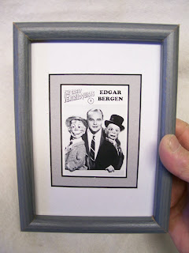
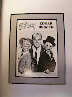

We have a winner!
12/3/2009
{kind=link}

Framed (5"x7") Edgar Bergen "Great Ventriloquist" trading card with double mat mounting. Beautiful. With Bonus. This unique piece of memorabilia will come with a duplicate trading card, loose, so you have full access to both front and back side of the card.
{kind=link}

The Edgar Bergen card was #1 in the four set series of Great Ventriloquist collector trading cards (48 total)produced in 1992 by M. A. Denemark, OO-LA-LA, Inc. Each set was made up of 12 cards featuring past and present well known ventriloquists with photo on front of card and brief biography on the back. Superbly done!
The 8th person to respond to this post and winner of this item was Tom Farrell (OH).
(Personal P.S. to M. A. Denemark: If you read this, could you send me an email? I no longer have your contact information.)
* * * * *
From Major Wes Green: " This must be a way to clear your attic or storage. I really need to follow your example and just donate my stuff to The Salvation Army. I find your blog inspirational and often relate it to a spiritual journey. You minister in special messages to special messengers and thru special messengers." Serving Christ Joyfully, Wes Green, Major; The Salvation Army.